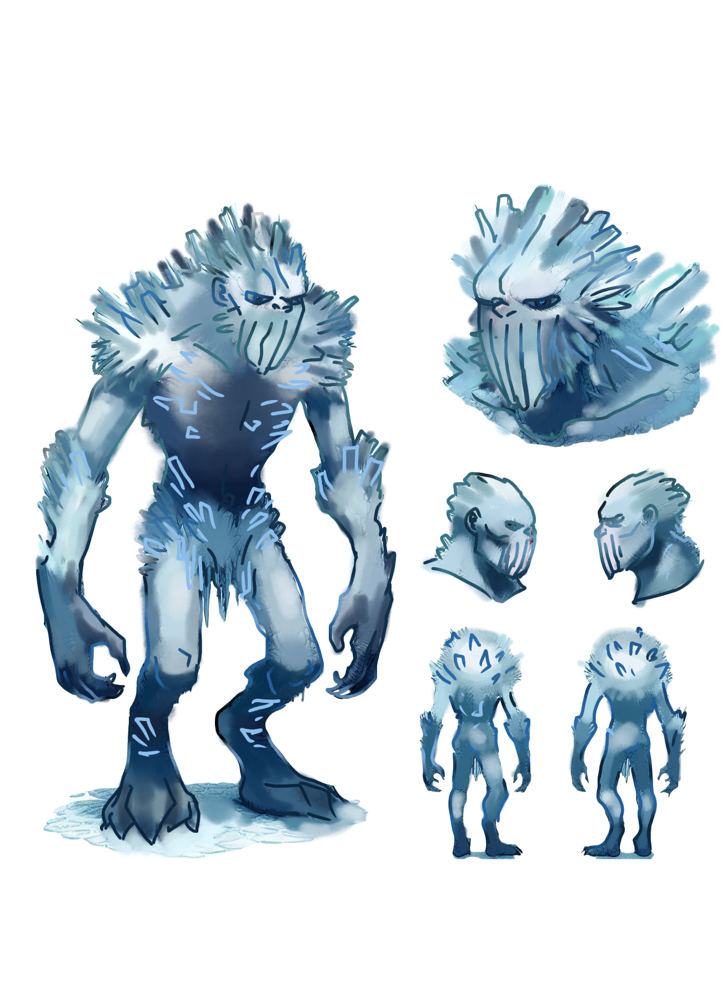

| Eisgolems |
| 
Der Eisgolem ist ein Wesen, das vom Schneekönig aus Schnee und Eis erschaffen wurde. Im Gegensatz zu eingefrorenen Menschen oder Animalen, die einst lebende Wesen waren, wird der Golem als Sklave geformt.
Er besitzt weder Intelligenz, noch eine Seele oder einen eigenen Willen und stellt lediglich eine riesige Eispuppe dar, die vollständig dem Willen des Schneekönigs unterworfen ist. Der Golem kann gleichzeitig bis zu drei Befehle speichern, abhängig von seinem Alter. Die Lebensdauer eines solchen Wesens ist praktisch unbegrenzt: Es wird weder krank, noch stirbt es eines natürlichen Todes, kann aber leicht durch äußere Einflüsse zerstört oder wie ein gewöhnlicher Eisblock zum Schmelzen gebracht werden. Golems werden im Norden in der eisigen Residenz aus natürlichen Eis- und Schneeblöcken erschaffen, da der Einsatz von Magie alleine sonst zu zeit- und energieaufwändig wäre, um ein so großes Wesen zu erschaffen. Magie wird alleine verwendet, um das Material zu bewegen und zusammenzuführen, wodurch eine grob geformte, menschenähnliche Figur entsteht. Anschließend erweckt der Schneekönig den Golem zum Leben und verleiht ihm die Fähigkeit, Befehlen zu gehorchen. |